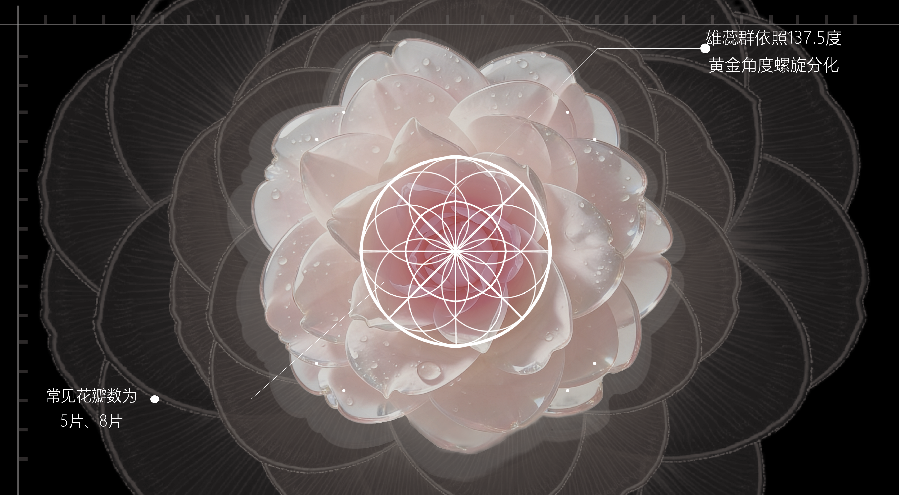

交互设计 / AIGC 视觉 / 沉浸式体验
PROJECT DECODER / 作品解码器
陈学成
让视觉成为可被触发的体验。
以影像、空间和可运行原型，把抽象概念转译成可被观看、触发和进入的体验系统。
STAR PROJECT 生命自赋几何诗 5 屏沉浸式展览 / 雷达触发 / TouchDesigner 链路
01 浙江美术馆入选
02 空间叙事与实时影像
03 可运行交互原型
SCAN TO DECODE
01 生命自赋几何诗 Immersive / Radar / TouchDesigner 02 心屿 Product Prototype / Emotion 03 观夏 · 闻香识我 Brand Experience / Scent 04 AI 影像实验 AIGC / Moving Image当前解码
生命自赋几何诗
沉浸式空间、实时影像、雷达交互与现场输出。
SELECTED WORKS
从空间、情绪到感官的体验实验。
首页只保留判断力最强的入口：一个沉浸式代表项目，一组能快速辨认方向的精选作品。

Immersive Interaction / Flagship
生命自赋几何诗
Garden of Ordinals
以斐波那契生长为线索，把观众位置、卡片翻转、地面索引与主墙影像连接成一套可被触发的空间叙事。
NEXT